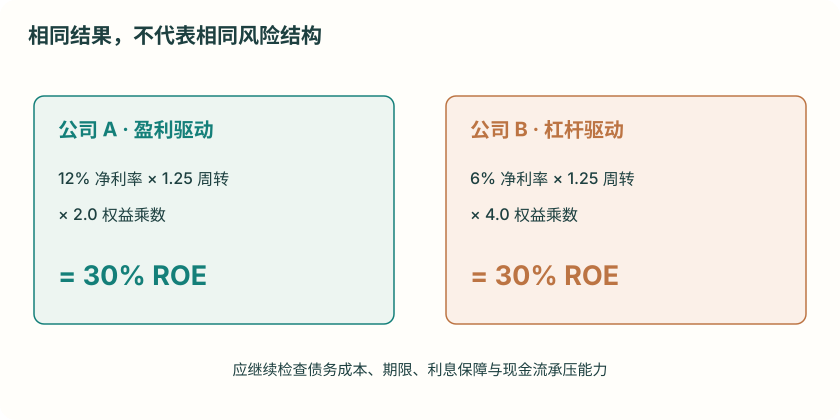
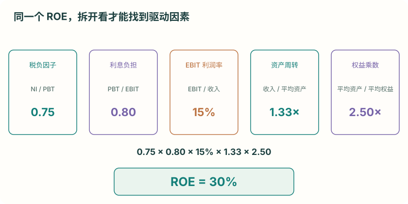

杜邦分析进阶：五因素 ROE 分解与综合评分边界
ROE 是一个结果，不是原因。把它拆成税负、利息负担、经营利润率、资产周转与权益乘数，才能解释回报来自经营改善还是资本结构放大。
同样 30% 的 ROE，背后可能是两种完全不同的企业
公司 A 净利率 12%、总资产周转率 1.25 次、权益乘数 2 倍，ROE=30%；公司 B 净利率 6%、周转率同为 1.25 次、权益乘数 4 倍，ROE 也为 30%。两个结果一样，但公司 B 对财务杠杆更敏感，利息和再融资压力可能更高。

杜邦分析的价值不是给公司贴上“好”或“坏”的标签，而是把一个综合结果拆成能进一步查证的驱动因素。CFA Institute 的分析框架指出，杜邦分解可以有不同层级；五因素分解进一步区分税负、利息负担、经营盈利、效率和杠杆。
三因素杜邦：先建立代数恒等式
以期间净利润除以平均归母权益计算 ROE 时，若采用归母净利润，应使用口径匹配的平均归母权益。三因素杜邦恒等式为：
三项分别为净利率、总资产周转率和权益乘数。它们相乘时，收入与资产会约去，剩下净利润/平均权益。平均资产和平均权益通常取期初期末平均；若年中发生重大并购、增资、回购或分红，季度或月度加权平均可能更合适。
若权益为负、接近零，或净利润与权益的归属口径不一致，ROE 和乘数会失去通常的经济解释。对于银行、保险、证券等金融机构，资产负债结构与非金融企业不同，不能不加调整地用制造业式解释。
五因素杜邦：利润率为何变化？
五因素模型将净利率继续拆成税负因子、利息负担因子和 EBIT 利润率：
教学案例：净利润 90、税前利润 120、EBIT 150、收入 1,000、平均总资产 750、平均权益 300。五因素分别为 0.75、0.80、15%、1.333 次、2.5 倍，相乘得到约 30%，与 90/300 一致。

利息负担因子需要明确 EBIT 的构造方式，税负因子受递延所得税、税收优惠和一次性税务调整影响。若 EBIT 或税前利润为负、接近零，因子比率可能符号反转或失去解释力；此时应回到利润表和现金流逐项分析，而不是强行比较因子。
把 ROE 驱动映射到可验证的经营问题
| 因子 | 可能驱动 | 继续核查 |
|---|---|---|
| 税负因子 | 有效税率、递延所得税、优惠 | 所得税费用调节表、优惠期限、递延税项 |
| 利息负担 | 借款成本、利息收入、资本化利息 | 借款附注、利息资本化、融资结构 |
| EBIT 利润率 | 产品结构、价格、成本、费用率 | 分部毛利、费用、一次性损益 |
| 资产周转率 | 应收、存货、固定资产利用效率 | DSO/DIO、产能利用率、并购影响 |
| 权益乘数 | 负债与权益结构、回购和分红 | 债务期限、担保、租赁负债、现金流 |
同一因素的上升不一定总是好事。例如资产周转率上升可能来自效率改善，也可能是资产减值或处置导致分母缩小；权益乘数下降可能源于主动去杠杆，也可能是大额增发稀释回报。分析时应写清因果链，而不是只给出方向性评价。
综合评分：把筛查工具与投资结论分开
沃尔类加权评分、Piotroski F-Score 等方法可以把多个指标组织成结构化筛查。它们的结果高度依赖样本、指标定义、行业和权重。自建“100 分制”模型不是会计准则或普适科学测量，不能把任意阈值称为客观健康等级。
Piotroski F-Score 原始研究设计有特定样本与研究背景，常见版本用九项信号衡量盈利、杠杆/流动性和经营效率的变化。将其用于其他市场、金融行业或不同会计准则时，需要重新检验变量定义、样本偏差、幸存者偏差、交易成本和时间外表现。分数 8 或 9 不是“强买入”，低分也不是舞弊认定。
更稳健的综合评分应先确定研究目的，再标准化指标方向与极端值，明确缺失值处理、权重来源、行业基准和回测期间，并进行敏感性分析。分数只能帮助排列复核优先级，最终结论仍要解释商业模式、会计质量、现金流与风险。
五因素杜邦工作台
调整假设，即时复算
所有金额使用同一合并范围与单位。示例将 EBIT 定义为与税前利润一致的息税前利润；实际报表分析需解释利息收入、利息费用和资本化利息的口径。
把平均权益从 300 改成 150，观察 ROE 与权益乘数的变化；经营利润率并没有因此改变。这是识别杠杆放大效应的一个简单实验。
跨章节交叉验证
ROE 结论至少需要四组交叉核对：第11章的增长与增量资本回报、第12章的利润现金转换、第9章的杠杆与偿债、第10章的营运效率。若 ROE 上升而 CFO/净利润下降、应收周转恶化、权益乘数上升，就应进一步查明利润质量和融资风险；但这些共同出现仍然只是调查线索。
自测：净利率12%、资产周转1.25、权益乘数2，ROE多少？
12%×1.25×2=30%。若另一家公司净利率6%、周转1.25、乘数4，ROE也为30%，但后者杠杆依赖更高，必须进一步审查融资成本和期限。
结论：杜邦分解让 ROE 可解释；综合评分让问题可排序。二者都不能替代原始报表证据和商业判断。
依据与适用边界
本章金额、公司与计算案例均为教学虚构；公式属于分析者使用的派生指标，不是统一法定评价阈值。实际判断须结合报告期、合并范围、会计准则和原始附注。